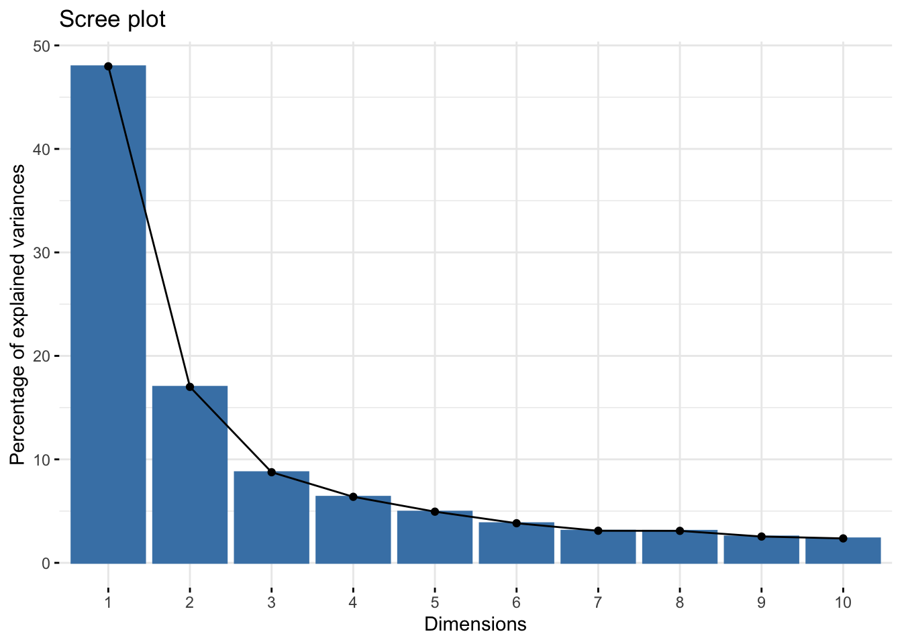
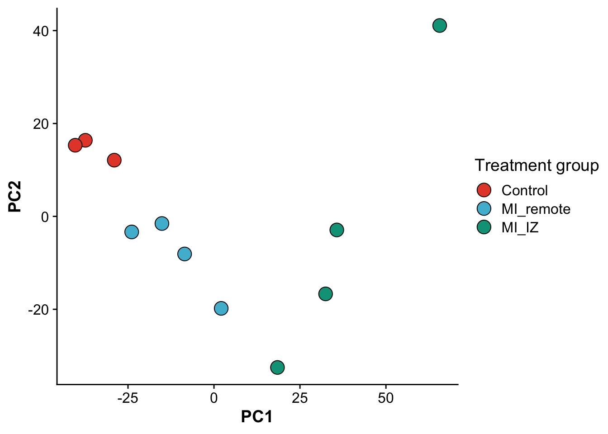
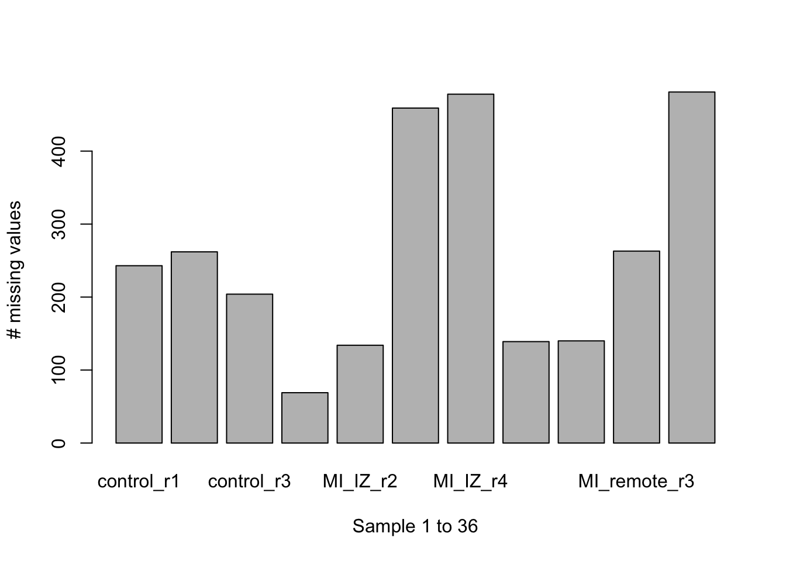
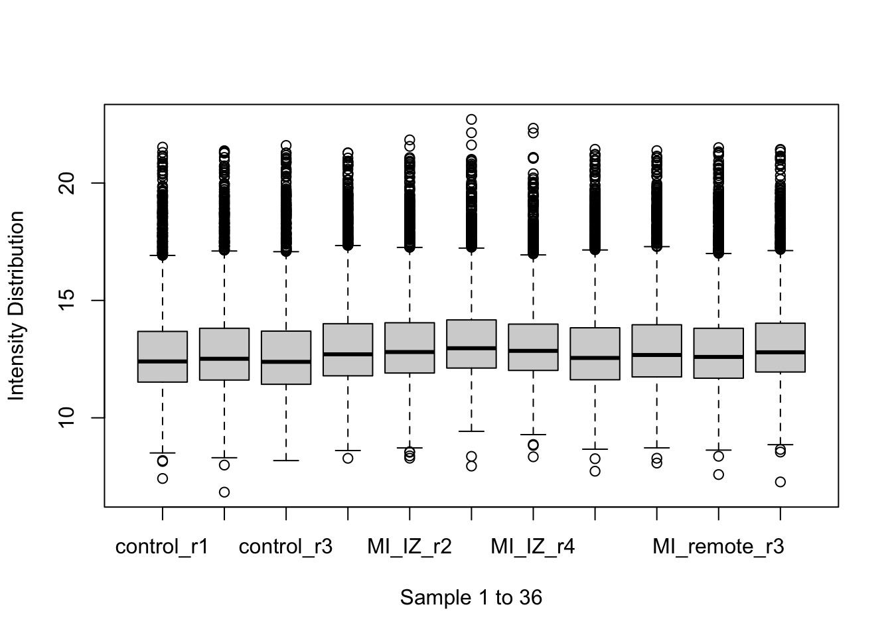
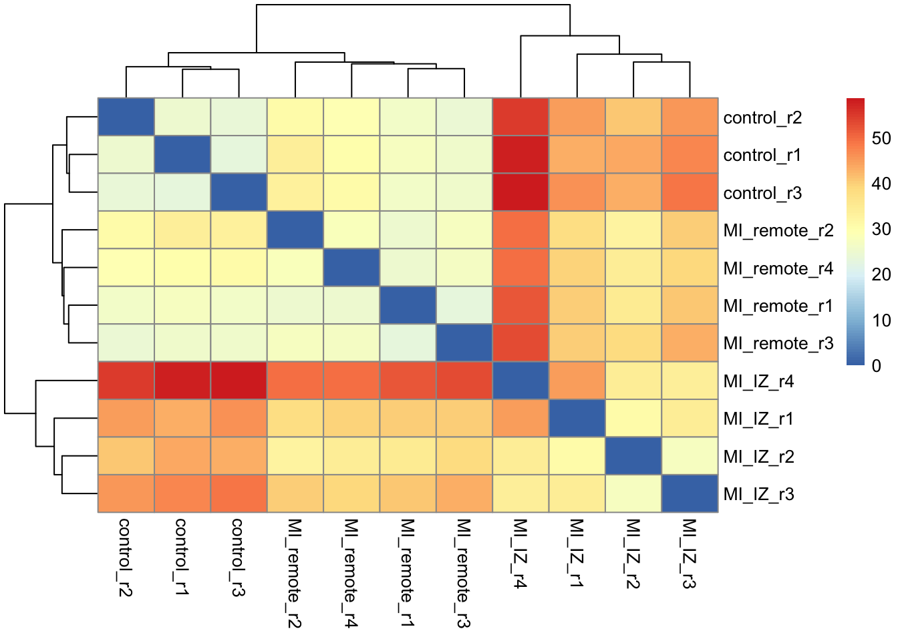
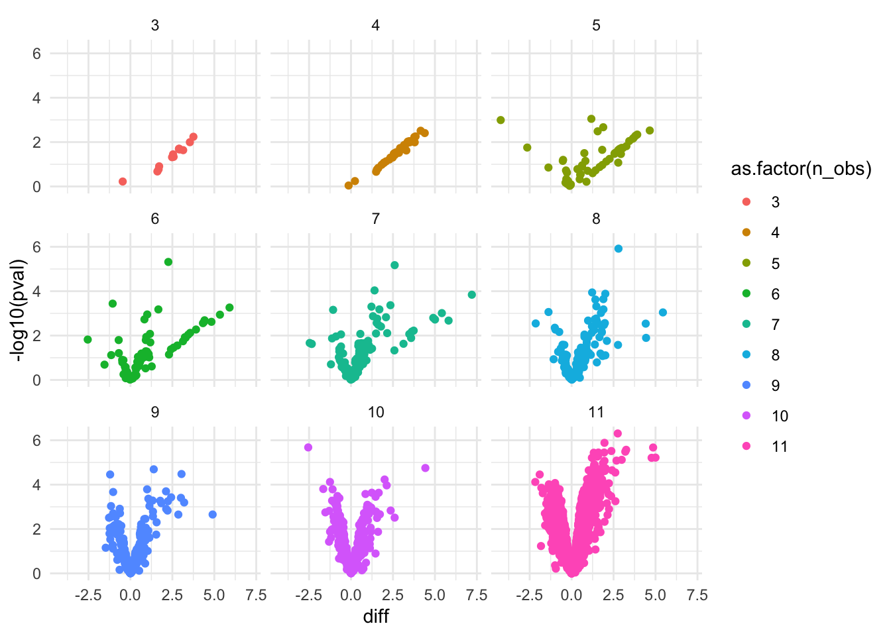
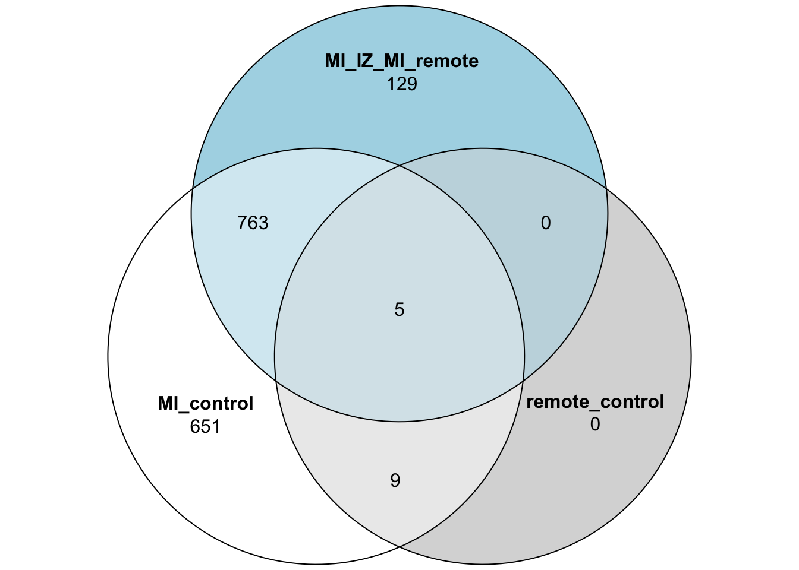
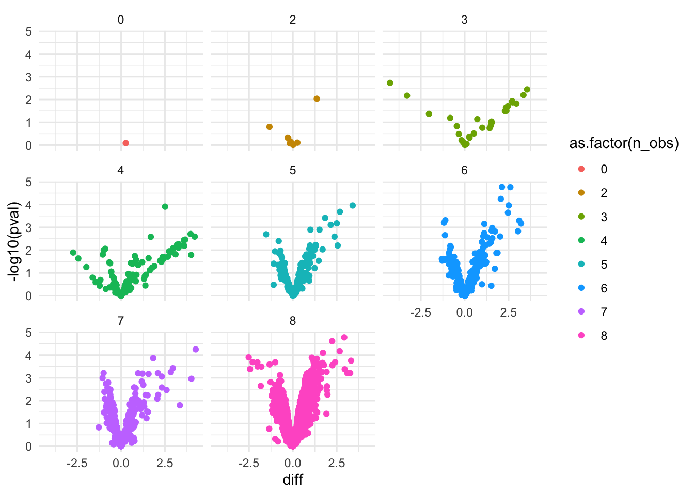
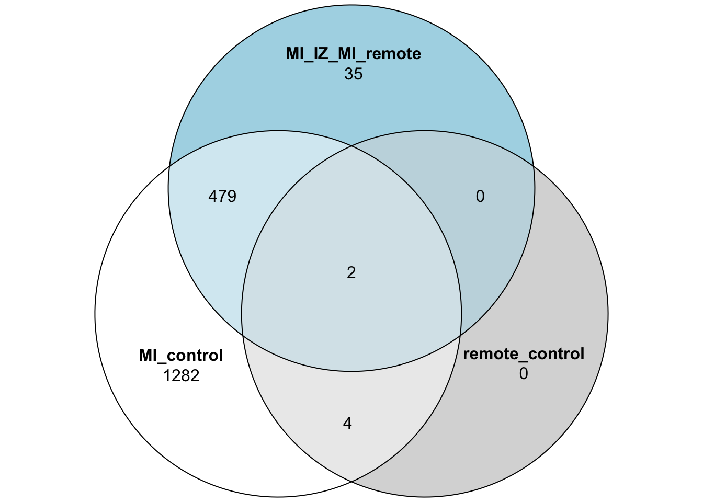

Last updated: 2023-06-20
Checks: 7 0
Knit directory: mi_spatialomics/
This reproducible R Markdown analysis was created with workflowr (version 1.7.0). The Checks tab describes the reproducibility checks that were applied when the results were created. The Past versions tab lists the development history.
Great! Since the R Markdown file has been committed to the Git repository, you know the exact version of the code that produced these results.
Great job! The global environment was empty. Objects defined in the global environment can affect the analysis in your R Markdown file in unknown ways. For reproduciblity it’s best to always run the code in an empty environment.
The command set.seed(20230612) was run prior to running
the code in the R Markdown file. Setting a seed ensures that any results
that rely on randomness, e.g. subsampling or permutations, are
reproducible.
Great job! Recording the operating system, R version, and package versions is critical for reproducibility.
Nice! There were no cached chunks for this analysis, so you can be confident that you successfully produced the results during this run.
Great job! Using relative paths to the files within your workflowr project makes it easier to run your code on other machines.
Great! You are using Git for version control. Tracking code development and connecting the code version to the results is critical for reproducibility.
The results in this page were generated with repository version 8493a79. See the Past versions tab to see a history of the changes made to the R Markdown and HTML files.
Note that you need to be careful to ensure that all relevant files for
the analysis have been committed to Git prior to generating the results
(you can use wflow_publish or
wflow_git_commit). workflowr only checks the R Markdown
file, but you know if there are other scripts or data files that it
depends on. Below is the status of the Git repository when the results
were generated:
Ignored files:
Ignored: .DS_Store
Ignored: .Rhistory
Ignored: .Rproj.user/
Ignored: analysis/.DS_Store
Ignored: data/.DS_Store
Ignored: references/
Ignored: renv/library/
Ignored: renv/staging/
Unstaged changes:
Modified: .gitignore
Note that any generated files, e.g. HTML, png, CSS, etc., are not included in this status report because it is ok for generated content to have uncommitted changes.
These are the previous versions of the repository in which changes were
made to the R Markdown
(analysis/proteomics.bulk_de_analysis.Rmd) and HTML
(docs/proteomics.bulk_de_analysis.html) files. If you’ve
configured a remote Git repository (see ?wflow_git_remote),
click on the hyperlinks in the table below to view the files as they
were in that past version.
| File | Version | Author | Date | Message |
|---|---|---|---|---|
| Rmd | 8493a79 | FloWuenne | 2023-06-20 | Saving intermediate analysis for proteomics. |
| html | 8493a79 | FloWuenne | 2023-06-20 | Saving intermediate analysis for proteomics. |
library(data.table)
library(tidyverse)── Attaching core tidyverse packages ──────────────────────── tidyverse 2.0.0 ──
✔ dplyr 1.1.2 ✔ readr 2.1.4
✔ forcats 1.0.0 ✔ stringr 1.5.0
✔ ggplot2 3.4.2 ✔ tibble 3.2.1
✔ lubridate 1.9.2 ✔ tidyr 1.3.0
✔ purrr 1.0.1
── Conflicts ────────────────────────────────────────── tidyverse_conflicts() ──
✖ dplyr::between() masks data.table::between()
✖ dplyr::filter() masks stats::filter()
✖ dplyr::first() masks data.table::first()
✖ lubridate::hour() masks data.table::hour()
✖ lubridate::isoweek() masks data.table::isoweek()
✖ dplyr::lag() masks stats::lag()
✖ dplyr::last() masks data.table::last()
✖ lubridate::mday() masks data.table::mday()
✖ lubridate::minute() masks data.table::minute()
✖ lubridate::month() masks data.table::month()
✖ lubridate::quarter() masks data.table::quarter()
✖ lubridate::second() masks data.table::second()
✖ purrr::transpose() masks data.table::transpose()
✖ lubridate::wday() masks data.table::wday()
✖ lubridate::week() masks data.table::week()
✖ lubridate::yday() masks data.table::yday()
✖ lubridate::year() masks data.table::year()
ℹ Use the conflicted package (<http://conflicted.r-lib.org/>) to force all conflicts to become errorslibrary(factoextra)Welcome! Want to learn more? See two factoextra-related books at https://goo.gl/ve3WBalibrary(ggsci)
library(cowplot)
Attaching package: 'cowplot'
The following object is masked from 'package:lubridate':
stamplibrary(here)here() starts at /Users/florian_wuennemann/1_Projects/MI_project/mi_spatialomicslibrary(proDA)
library(limma)
library(dplyr)
library(tibble)
library(tidyr)
library(ggplot2)
library(pheatmap)
library(ggrepel)
library(eulerr)
source(here("./code/params_R.R"))First, let’s load the filtered protein table.
## Import imputed protein table (our "bulk" data)
clean_proteins <- fread(file = "./output/proteomics.filtered_proteins.tsv")As a fist QC, we want to look at a principal component embedding of the samples in the first two principle components. Due to the strong perturbation effect of a myocardial infarction, we expect to find samples distributed by group (control, MI_remote, MI_IZ) in the first principle component.
clean_proteins_mat <- clean_proteins %>%
select(-c(Protein_Group,Protein_Names,Protein_Ids,Genes))%>%
drop_na()
## Calculate principal components and plot the firs two PCs
res.pca <- prcomp(t(log2(clean_proteins_mat)), scale = TRUE)
fviz_eig(res.pca)
| Version | Author | Date |
|---|---|---|
| 8493a79 | FloWuenne | 2023-06-20 |
pcs <- as.data.frame(res.pca$x)
pcs$sample <- colnames(clean_proteins_mat)
pcs <- pcs %>%
mutate("group" = if_else(grepl("control",sample),"control",
if_else(grepl("MI_IZ",sample),"MI_IZ","MI_remote"))
)
## Set order of groups
pcs$group <- factor(pcs$group,
levels = c("control","MI_remote","MI_IZ"))
## Plot PCs
ggplot(pcs,aes(PC1,PC2)) +
geom_point(size = 5,pch = 21,color = "black", aes(fill = group)) +
scale_fill_npg(labels = c("Control","MI_remote","MI_IZ")) +
labs(color = "Group") +
guides(fill=guide_legend(title="Treatment group"))
| Version | Author | Date |
|---|---|---|
| 8493a79 | FloWuenne | 2023-06-20 |
As we expected, samples separate in PC1, based on their group category, confirming that the strongest effect between samples is whether the heart experienced an infarct and the location of the endocardial cells relative to the infarct zone.
## First we format the protein matrix for proDA
protein_ids <- clean_proteins$Protein_Ids
gene_mapping <- clean_proteins %>%
select(Protein_Ids,Genes)
abundance_matrix <- clean_proteins %>%
select(-c(Protein_Group,Protein_Ids,Protein_Names,Genes))
abundance_matrix <- log2(abundance_matrix)
rownames(abundance_matrix) <- protein_idsbarplot(colSums(is.na(abundance_matrix)),
ylab = "# missing values",
xlab = "Sample 1 to 36")
| Version | Author | Date |
|---|---|---|
| 8493a79 | FloWuenne | 2023-06-20 |
boxplot(abundance_matrix,
ylab = "Intensity Distribution",
xlab = "Sample 1 to 36")
| Version | Author | Date |
|---|---|---|
| 8493a79 | FloWuenne | 2023-06-20 |
normalized_abundance_matrix <- median_normalization(as.matrix(abundance_matrix))da <- dist_approx(normalized_abundance_matrix)plot_mat <- as.matrix(da$mean)
pheatmap::pheatmap(plot_mat)
| Version | Author | Date |
|---|---|---|
| 8493a79 | FloWuenne | 2023-06-20 |
design_matrix <- pcs %>%
select(sample,group)
control_mi_cont <- c(0,0,0,1,1,1,1)
iz_remote_cont <- c(0,0,0,0,1,1,1,1)
## column numbers of different groups
control_idx <- c(1,2,3)
mi_iz_idx <- c(4,5,6,7)
mi_remote_idx <- c(8,9,10,11)fit_full <- proDA(normalized_abundance_matrix, design = ~ group,
col_data = design_matrix, reference_level = "control")test_res_miiz <- test_diff(fit_full, "groupMI_IZ", pval_adjust_method = "fdr")
test_res_miiz$gene <- gene_mapping$Genes
test_res_miiz$protein_ids <- gene_mapping$Protein_Ids
test_res_miiz <- test_res_miiz %>%
arrange(adj_pval)
volc_test_miiz <- ggplot(data=test_res_miiz, aes(x=diff, y=-log10(pval), label = gene)) +
geom_point(aes(color = as.factor(n_obs))) +
theme_minimal() +
facet_wrap(~ n_obs)
volc_test_miiz
| Version | Author | Date |
|---|---|---|
| 8493a79 | FloWuenne | 2023-06-20 |
test_res_miremote <- test_diff(fit_full, "groupMI_remote", pval_adjust_method = "fdr")
test_res_miremote$gene <- gene_mapping$Genes
test_res_miremote$protein_ids <- gene_mapping$Protein_Ids
test_res_miremote <- test_res_miremote %>%
arrange(adj_pval)
volc_test_miiz <- ggplot(data=test_res_miremote, aes(x=diff, y=-log10(pval), label = gene)) +
geom_point(aes(color = as.factor(n_obs))) +
theme_minimal() +
facet_wrap(~ n_obs)
volc_test_miiz
| Version | Author | Date |
|---|---|---|
| 8493a79 | FloWuenne | 2023-06-20 |
normalized_abundance_matrix_sub <- normalized_abundance_matrix[,c(mi_iz_idx,mi_remote_idx)]
fit_iz_remote <- proDA(normalized_abundance_matrix_sub, design = as.factor(c("MI_IZ","MI_IZ","MI_IZ","MI_IZ","MI_remote","MI_remote","MI_remote","MI_remote")))test_res_iz_remote <- test_diff(fit_iz_remote, MI_IZ - MI_remote, pval_adjust_method = "fdr")
test_res_iz_remote$gene <- gene_mapping$Genes
test_res_iz_remote$protein_ids <- gene_mapping$Protein_Ids
test_res_iz_remote <- test_res_iz_remote %>%
arrange(adj_pval)
volc_test_iz_remote <- ggplot(data=test_res_iz_remote, aes(x=diff, y=-log10(pval), label = gene)) +
geom_point(aes(color = as.factor(n_obs))) +
theme_minimal() +
facet_wrap(~ n_obs)
volc_test_iz_remote
| Version | Author | Date |
|---|---|---|
| 8493a79 | FloWuenne | 2023-06-20 |
test_res_miiz_genes <- subset(test_res_miiz,adj_pval <= 0.1)$gene
test_res_miremote_genes <- subset(test_res_miremote,adj_pval <= 0.1)$gene
test_res_iz_remote_genes <- subset(test_res_iz_remote,adj_pval <= 0.1)$gene
venn_vec <- test_res_miremote$gene
venn_df <- data.frame("MI_control" = venn_vec %in% test_res_miiz_genes,
"remote_control" = venn_vec %in% test_res_miremote_genes,
"MI_IZ_MI_remote" = venn_vec %in% test_res_iz_remote_genes)
venn_df$gene <- venn_vec
## Plot the 3 group Venn diagram
plot(venn(venn_df[,1:3]))
| Version | Author | Date |
|---|---|---|
| 8493a79 | FloWuenne | 2023-06-20 |
## get proteins that are deferentially expressed between MI vs control and MI_IZ and MI_remote
MI_IZ_proteins <- subset(venn_df,MI_control == TRUE & remote_control == FALSE & MI_IZ_MI_remote == TRUE)$gene
test_res_iz_remote_uniq <- subset(test_res_iz_remote,gene %in% MI_IZ_proteins)write.table(test_res_miiz_genes,
file = "./output/mi_iz_specific_proteins.tsv",
col.names = FALSE,
row.names = FALSE,
quote = FALSE)
sessionInfo()R version 4.2.3 (2023-03-15)
Platform: aarch64-apple-darwin20 (64-bit)
Running under: macOS Ventura 13.4
Matrix products: default
BLAS: /Library/Frameworks/R.framework/Versions/4.2-arm64/Resources/lib/libRblas.0.dylib
LAPACK: /Library/Frameworks/R.framework/Versions/4.2-arm64/Resources/lib/libRlapack.dylib
locale:
[1] en_US.UTF-8/en_US.UTF-8/en_US.UTF-8/C/en_US.UTF-8/en_US.UTF-8
attached base packages:
[1] stats graphics grDevices datasets utils methods base
other attached packages:
[1] eulerr_7.0.0 ggrepel_0.9.3 pheatmap_1.0.12 limma_3.54.2
[5] proDA_1.13.0 here_1.0.1 cowplot_1.1.1 ggsci_3.0.0
[9] factoextra_1.0.7 lubridate_1.9.2 forcats_1.0.0 stringr_1.5.0
[13] dplyr_1.1.2 purrr_1.0.1 readr_2.1.4 tidyr_1.3.0
[17] tibble_3.2.1 ggplot2_3.4.2 tidyverse_2.0.0 data.table_1.14.8
[21] workflowr_1.7.0
loaded via a namespace (and not attached):
[1] bitops_1.0-7 matrixStats_1.0.0
[3] fs_1.6.2 RColorBrewer_1.1-3
[5] httr_1.4.6 rprojroot_2.0.3
[7] GenomeInfoDb_1.34.9 backports_1.4.1
[9] tools_4.2.3 bslib_0.4.2
[11] utf8_1.2.3 R6_2.5.1
[13] BiocGenerics_0.44.0 colorspace_2.1-0
[15] withr_2.5.0 tidyselect_1.2.0
[17] processx_3.8.0 compiler_4.2.3
[19] git2r_0.32.0 cli_3.6.1
[21] Biobase_2.58.0 DelayedArray_0.24.0
[23] labeling_0.4.2 sass_0.4.6
[25] scales_1.2.1 callr_3.7.3
[27] digest_0.6.31 rmarkdown_2.21
[29] extraDistr_1.9.1 XVector_0.38.0
[31] pkgconfig_2.0.3 htmltools_0.5.5
[33] MatrixGenerics_1.10.0 highr_0.10
[35] fastmap_1.1.1 rlang_1.1.1
[37] rstudioapi_0.14 farver_2.1.1
[39] jquerylib_0.1.4 generics_0.1.3
[41] jsonlite_1.8.4 car_3.1-2
[43] RCurl_1.98-1.12 magrittr_2.0.3
[45] GenomeInfoDbData_1.2.9 Matrix_1.5-3
[47] Rcpp_1.0.10 munsell_0.5.0
[49] S4Vectors_0.36.2 fansi_1.0.4
[51] abind_1.4-5 lifecycle_1.0.3
[53] stringi_1.7.12 whisker_0.4.1
[55] yaml_2.3.7 carData_3.0-5
[57] SummarizedExperiment_1.28.0 zlibbioc_1.44.0
[59] grid_4.2.3 promises_1.2.0.1
[61] lattice_0.20-45 hms_1.1.3
[63] polylabelr_0.2.0 knitr_1.42
[65] ps_1.7.4 pillar_1.9.0
[67] ggpubr_0.6.0 GenomicRanges_1.50.2
[69] ggsignif_0.6.4 stats4_4.2.3
[71] glue_1.6.2 evaluate_0.21
[73] getPass_0.2-2 renv_0.17.3
[75] BiocManager_1.30.21 vctrs_0.6.2
[77] tzdb_0.4.0 httpuv_1.6.11
[79] polyclip_1.10-4 gtable_0.3.3
[81] cachem_1.0.8 xfun_0.39
[83] broom_1.0.5 rstatix_0.7.2
[85] later_1.3.1 IRanges_2.32.0
[87] timechange_0.2.0